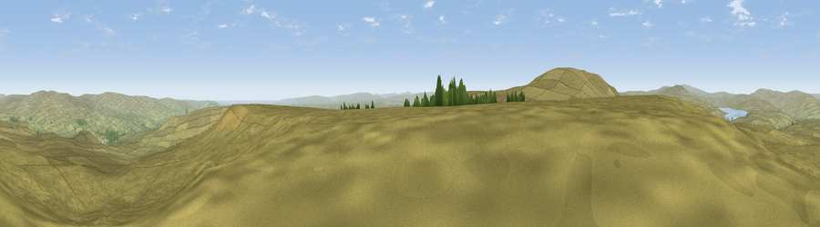

Viewpoint c10505_7686
#6167 in England · top 10% of its area beats it · — · access?Where it is
The exact computed spot (NY 84375 25325). Click the marker for map links.
Public access: no public right of way or access land is recorded at this exact spot — it may be on private land. Computed from Natural England's CRoW access layer and OpenStreetMap rights of way — not the legal definitive map. Always verify locally.
The view, rendered

A 360° render of this exact spot computed from the terrain model, tree cover and land cover — summer colours, afternoon light, calibrated against photographs of famous viewpoints. Real trees, hedges and buildings will differ in detail.
The panorama
Grey silhouette: terrain skyline in each direction (720 bearings, Earth curvature and refraction included). Dashed green: skyline with trees (+15 m) and buildings (+8 m) as obstacles. Blue strip: how far the ground is visible on each bearing.
Where the view opens
Wedge length = distance to the farthest visible ground on that bearing (vegetation-aware). Rings at 10, 25 and 50 km.
What fills the view
99% grassland ·
Angular shares of the visible panorama (visual magnitude), not map area. Landscape diversity 0.04 (0–1 Shannon).
Key numbers
More beautiful places nearby
The staircase of upgrades: each row has a higher view potential than everything closer. Driving times are estimates from straight-line distance, calibrated against real road routing — check an actual route before setting out.
| Place | Direction | Drive | Score |
|---|---|---|---|
| Viewpoint c10501_7697 | ESE · 1 km | ~2 min | 70.9 |
| Viewpoint c10490_7651 | WSW · 2 km | ~5 min | 74.4 |
| Mickle Fell | WSW · 4 km | ~9 min | 75.8 |
| Great Dun Fell | WNW · 15 km | ~27 min | 77.8 |
| Little Dun Fell | WNW · 16 km | ~28 min | 78.4 |
| Cross Fell | WNW · 18 km | ~31 min | 78.7 |
| Fell Head | SW · 33 km | ~51 min | 78.8 |
| Calders | SSW · 34 km | ~52 min | 79.0 |
54.62282, -2.24351 · source: screening · position refined by local search. Computed location — check access rights before visiting.